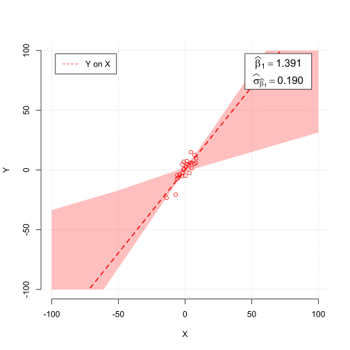
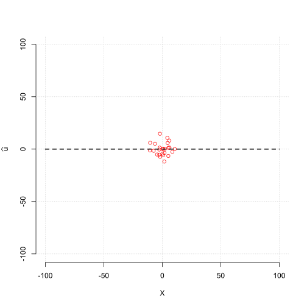
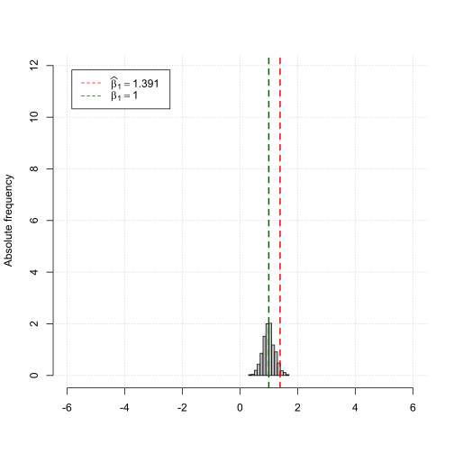
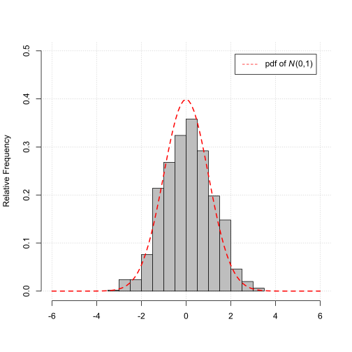

Econometrics and Statistics (520K)
Econometrics and Statistics (520K)
Properties of the OLS Estimator
Large sample Properties in General
Sample draws and sampling distribution
We simulate a sample draw of size \(n\) from our statistical model and calculate the the value for our estimator for the particular sample draw.
We repeat this exercise \(10,000\) times to get \(10,000\) values for our estimator.
The distribution of these \(10,000\) values for our estimator is the sampling distribution of our estimator.
Statistical Model
Consider the simple regression model,
$$ \begin{align} Y_i = \beta_{0} + \beta_{1} X_{i} + u_{i}, \end{align} $$where \(\beta_{0}=0\) is the intercept and \(\beta_{1}=1\) is the slope parameter.
Furthermore, assume \(X_{i}\) and \(u_{i}\) are i.i.d. normally distributed, i.e.,
$$ \begin{align} X_{i} \sim N\left(0, \sigma_{X}^{2}\right), \;\;\;\;\; u_{i} \sim N\left(0, \sigma_{u}^{2}\right), \end{align} $$where \(\sigma_{X}=5\) and \(\sigma_{u}=5\) is the standard deviation of \(X_{i}\) and \(u_{i}\), respectively.
Estimator and Parameter of Interest
We are interested in the sampling properties of the OLS estimator \(\widehat{\beta}_{1}\) given by,
$$ \begin{align} \widehat{\beta}_{1} = \frac{\sum_{i=1}^{n}\left(X_{i} - \overline{X}\right)\left(Y_{i} - \overline{Y}\right)}{\sum_{i=1}^{n}\left(X_{i} - \overline{X}\right)^{2}}, \end{align} $$as estimator for the slope parameter \(\beta_{1}\) of the regression model above.
Illustration
Change the parameters and see the effect on the properties of the OLS estimator \(\widehat{\beta}_{1}\) as estimator for \(\beta_{1}\).
Parameters
Sample Draw
Sample Size
Scatter plot (observations)
The red fitted regression line is based on the regression of,
$$ \begin{align} Y_{i} \;\;\;\;\; \text{on} \;\;\;\;\; X_{i}. \end{align} $$The scatter plots and the fitted regression lines represent the result for only one simulation. The shaded areas illustrate the range of all fitted regression lines across all simulations.
Scatter plot (fitted residuals)
The fitted unobserved residuals are constructed as,
$$ \begin{align} \widehat{u}_{i} = Y_{i} - \widehat{\beta}_{1} X_{i}, \end{align} $$for only one simulation where \(\widehat{\beta}_{1}\) is the respective OLS estimate.
Histogram of the OLS estimator \(\widehat{\beta}_{1}\)
As the sample size \(n\) grows the OLS estimator \(\widehat{\beta}_{1}\) gets closer to \(\beta\), i.e.,
$$ \begin{align} \widehat{\beta}_{1} \overset{p}{\to} \beta. \end{align} $$Histogram of the standardized OLS estimator \(z_{\widehat{\beta}_{1}}\)
As the sample size \(n\) grows the distribution of the standardized sample average,
$$ \begin{align} z_{\overline{Y}} &= \frac{\overline{Y} - \beta}{\sigma_{\widehat{\beta}_{1}}}, \end{align} $$gets closer to the standard normal distribution \(N\left(0, 1\right)\).
More Details
For the construction of the standardized OLS estimator \(z_{\widehat{\beta}_{1}}\), the variance of \(\widehat{\beta}_{1}\), i.e., \(\sigma_{\widehat{\beta}_{1}}^{2}\), has to be estimated.
The variance of \(\widehat{\beta}_1\), i.e., \(\sigma_{\widehat{\beta}_{1}}^{2}\), can be robustly estimated by,
$$ \begin{align} \widehat{\sigma}_{\widehat{\beta}_{1}}^{2} = \frac{1}{n} \times \frac{\frac{1}{n-2}\sum_{i=1}^{n}\left(X_{i} - \overline{X}\right)^{2}\widehat{u}_{i}^{2}}{\left[\frac{1}{n}\sum_{i=1}^{n}\left(X_{i} - \overline{X}\right)^{2}\right]^{2}}, \end{align} $$where \(\widehat{u}_{i}\) are the residuals of the estimate regression line.
Note, the estimator for \(\sigma_{\widehat{\beta}_{1}}^{2}\) above is robust w.r.t. to heteroskedasticity, i.e., it does not rely on the assumption of homoskedasticity.
Instead, some statistic software report estimates \(\sigma_{\widehat{\beta}_{1}}^{2}\), based on the assumption of homoskedasticity.
The so called homoskedaticity-only estimator of \(\sigma_{\widehat{\beta}_{1}}^{2}\), is given by,
$$ \begin{align} \widetilde{\sigma}_{\widehat{\beta}_{1}}^{2} = \frac{\frac{1}{n-2}\sum_{i=1}^{n}\widehat{u}_{i}^{2}}{\sum_{i=1}^{n}\left(X_{i} - \overline{X}\right)^{2}}. \end{align} $$Remember, due to the different outcomes of the samples the OLS estimates will vary across sample draws.